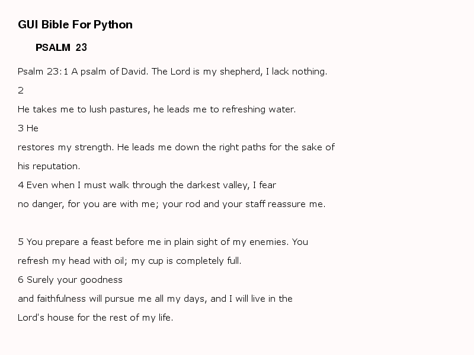

NET¶
net is a guibible module and has a class called Bible.
Bible¶
Bible has two methods namely:
- display() –> Displays a specified bible verse in a graphical format.
- read() –> Displays a specified bible verse in the console window.
Arguments¶
the Bible class can take between 0 - 4 arguments. It tries to help fix spelling errors and wrong book name, chapter or verse and if none can be fixed, it falls back to the nearest correct mistake level. For example, if psalm was spelt wrongly, it falls back to Genesis, if Psalm has no chapter 2345, it falls back to Psalm 1.
Zero argument¶
Bible() – > Will get the default values i.e. Genesis Chapter 1.
One argument¶
Bible(“Book name”)
Bible("Exodus") – > Will use first parameter as the book name and a default chapter 1 to get the verse i.e. Exodus Chapter 1.
Two argument¶
Bible(“Book name”, chapter number)
Bible("Psalm", 3) – > Will use first parameter as the book name and the second parameter as the second parameter as the chapter number to get the passage i.e. Psalm 3.
Three argument¶
Bible(“Book name”, chapter number, verse begin number)
Bible("Psalm", 23, 5) – > Will use first parameter as the book name, the second parameter as the chapter, and the third parameter as the verse number to get the passage i.e. Psalm 23:5.
Four argument¶
Bible(“Book name”, chapter number, verse begin number, verse end number)
Bible("Proverb", 2, 4, 6) – > Will use first parameter as the book name, the second parameter as the chapter, and the third parameter as the verse starting number and the fourth parameter as the verse end-number to get the passage i.e. Proverb 2:4-6.
Importing module class¶
You can import the Bible class in any of the following ways. For example:
import guibible.net #1
from guibible.net import Bible #2
import guibible.net as somename #3
from guibible.net import Bible as somename #4
Module methods¶
read()¶
Read takes no argument and can be used easily after importing the Bible class and creating an instance as in the example below. It will then print the corresponding passage to the console window.
from guibible.net import Bible
sample = Bible("Psalm", 23)
sample.read()
display()¶
display can be used easily after importing the Bible class and creating an instance as in the example below. It will then display the corresponding passage in a window using pygame’s graphic display. It takes between zero to two arguments.
Arguments¶
Zero arguments
instance_variable.display()
uses the default foreground and background colours
One argument
Display( [R, G, B] )
instance_variable.display( (foreground colour) )
will set the text foreground color to the specifed RGB tuple or list and leave the background as the default value. e.g. the code below will set the texts colour to blue.
sample.bible( (0,0,255) )
Two arguments
instance_variable.display( [foreground colour], [background colour] )
will set the text foreground color to the first RGB tuple or list argument and the background color to the second RGB tuple or list argument. e.g. the code below will set the texts colour to white and the background colour to black.
sample.bible( [255, 255, 255], [0, 0, 0] )

Important
pygame must be installed for this to work
To install pygame, simply go to the shell (terminal) and type:
pip install pygame
Example¶
from guibible.net import Bible
sample = Bible("Psalm", 23)
sample.display()
Result¶
Quitting the GUI display window¶
Note
Quitting
To quit the gui window, press the Q, ESC (escape) or the SPACE bar key on the keyboard.